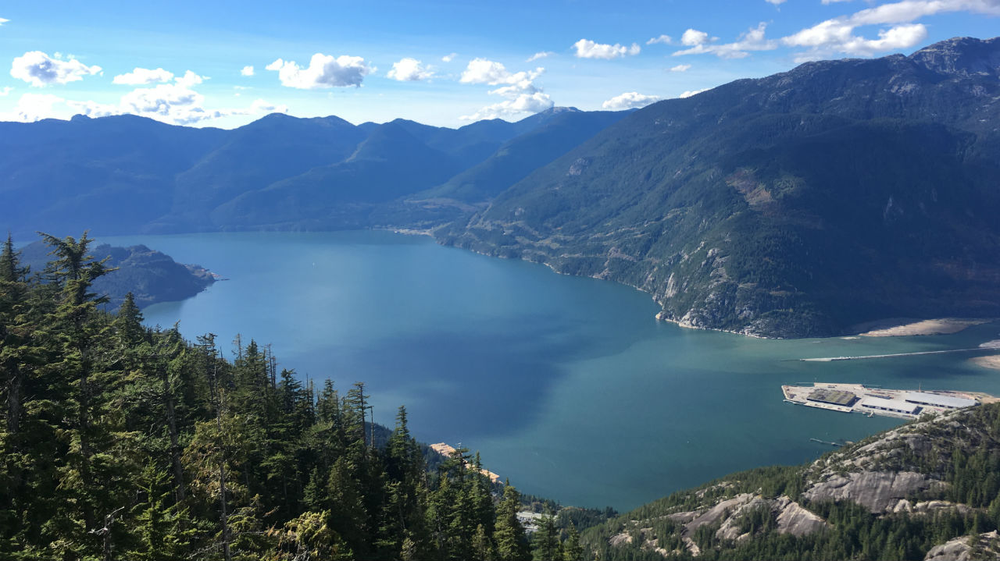
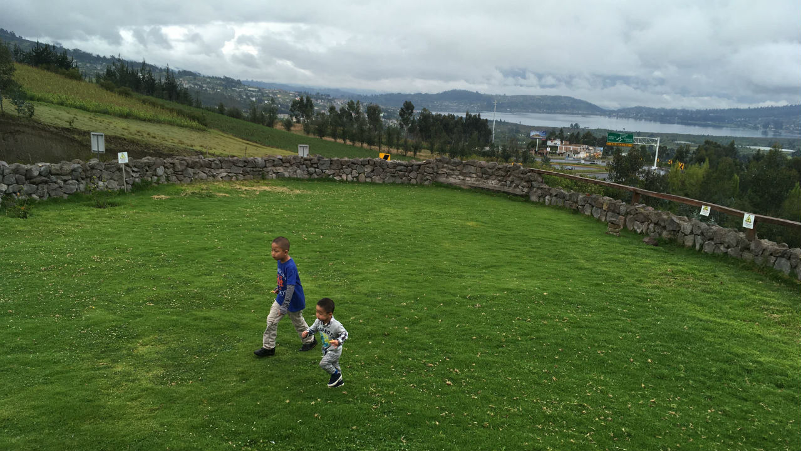
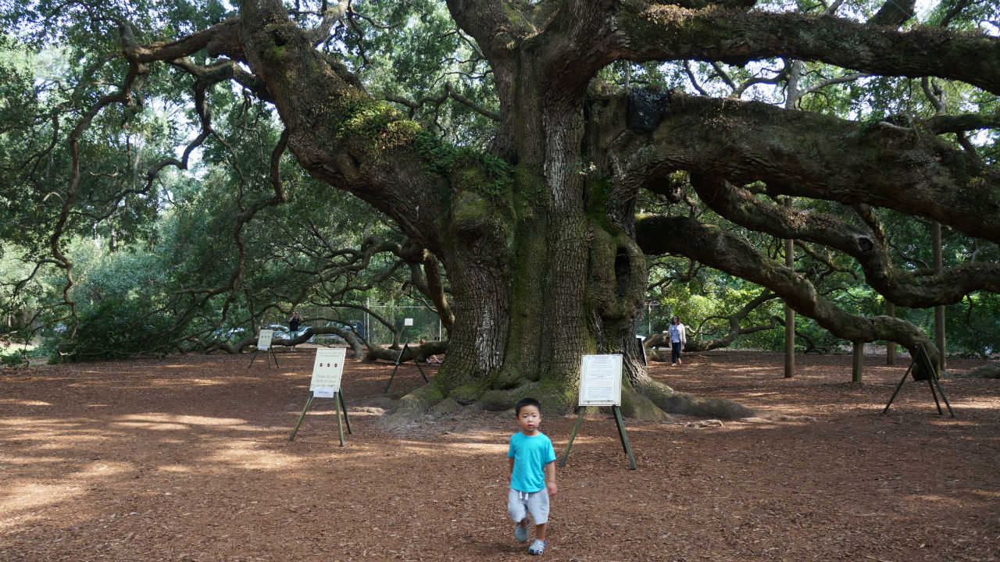

"Life is either a daring adventure or nothing at all"
vancouver
Walkable neighborhoods, drink-and-dine delights and memorable cultural and outdoor activities framed by dramatic vistas. There's a glassful of great reasons to love this lotusland metropolis. – Lonely Planet
ecuador
Postcard-pretty colonial centers, waves splashing white-sand beaches, Kichwa villages, Amazonian rainforest and the breathtaking Andes, a dazzling array of wonders is squeezed into this compact country. – Lonely Planet
southern usa
The South was arguably the first of the USA to be considered a 'region' defined by its own cuisine, landscape, accent, literature, music and, under-girding all of the above, history – one that is long and beautiful, brutal and bloody. – Lonely Planet